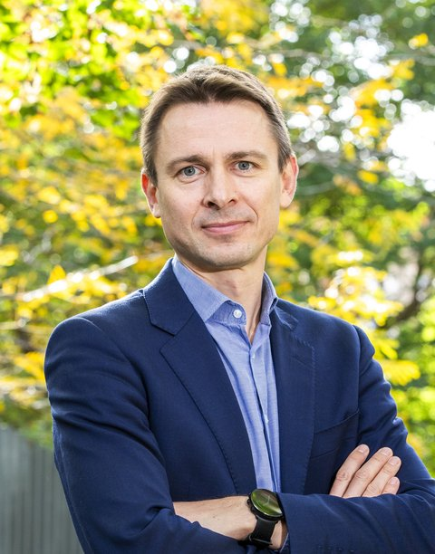

Lukas Rass-Masson
Professor of Private Law, Université Toulouse Capitole (Institut de droit privé).
My work sits at the meeting point of private international law, European law, and the emerging fields, cyberspace and space among them, where classical legal categories have to be rethought. I co-direct the Master MADIC and the 2026 Hague Academy Centre for Studies and Research on cyberspace and international law, and I preside over the Maison de l'Europe Toulouse Occitanie.
Current focus
My research is organised around three axes: the methodology of EU private international law; cyberspace and international law, which I co-direct as a 2026 Hague Academy Centre for Studies and Research with Professor Mohamed S. Helal; and space law. A fuller account is on the research page.
Roles
- Co-director, Master MADIC (droit international appliqué et comparé), with Prof. Pierre Egéa
- Co-director, 2026 Hague Academy Centre for Studies and Research, "Cyberspace and International Law"
- President, Maison de l'Europe Toulouse Occitanie
- Bureau member, Deutsch-Französische Juristenvereinigung
- Former Director, European Law School of Toulouse (2018–2023)